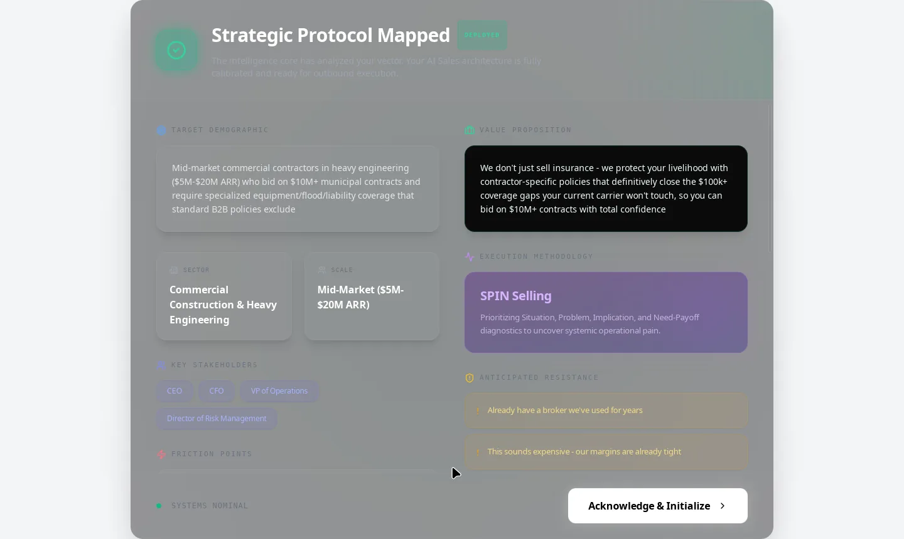
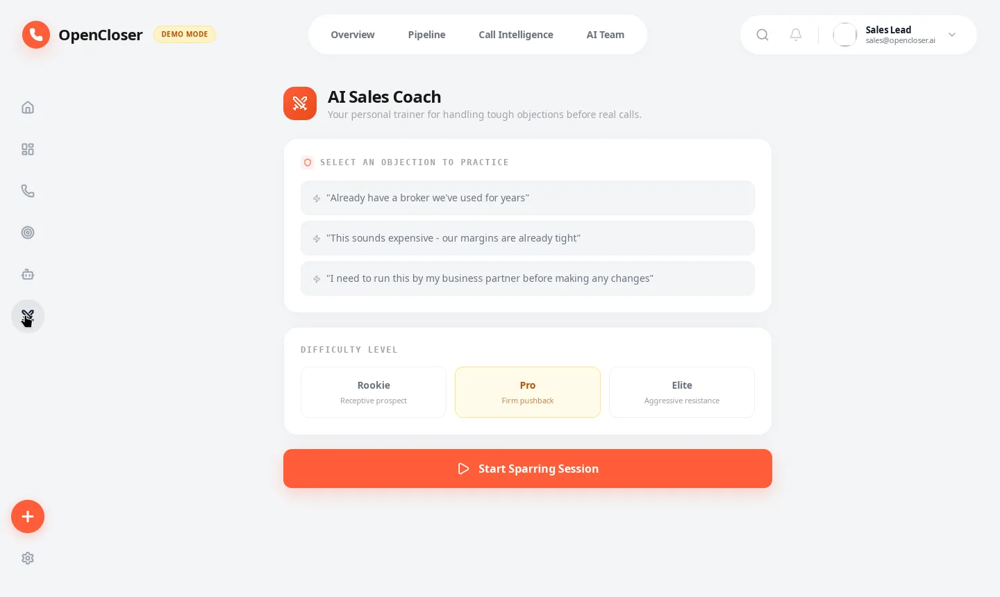
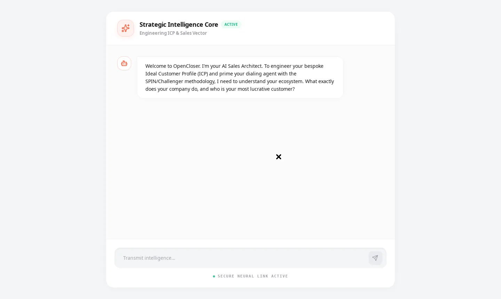
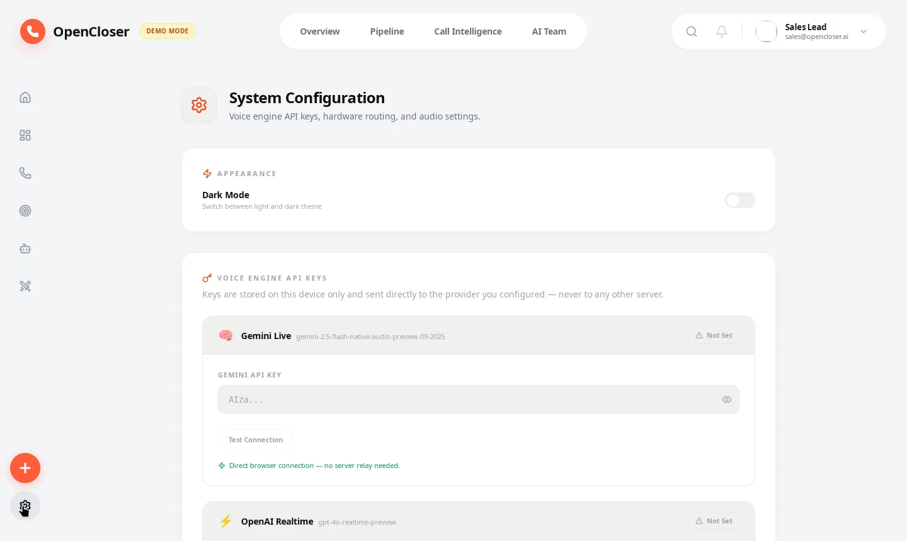

🧠
AI Sales Strategist
Interviews you about your market, then generates your Ideal Customer Profile using SPIN & Challenger — in minutes, not consulting engagements.
OpenCloser is the open source AI sales platform — strategist, lead researcher, voice caller, coach, and manager in one desktop app. AI cold calling, lead generation, and sales automation with zero SaaS fees and zero cloud dependency.


Every seat of a sales org, recreated as local-first AI — sharing one pipeline, one database, zero subscriptions.

Interviews you about your market, then generates your Ideal Customer Profile using SPIN & Challenger — in minutes, not consulting engagements.

Hunts prospects against your ICP, auto-scores every lead, and drops the qualified ones straight into your Kanban pipeline.
Dials real prospects over Twilio phone lines. Reads sentiment live, handles objections, never burns out. Mock mode included — no credentials needed to try it.

Spar against 12 objection archetypes at Rookie, Pro, or Elite difficulty. Instant scoring with specific rebuttal tips after every round.

Post-call debriefs with sentiment analysis, auto-written follow-ups, and conversion analytics across your whole pipeline.

Design your caller: Gemini, OpenAI, or ElevenLabs voices, a 5-axis emotion matrix, and SPIN / Challenger / Sandler sales frameworks.
From install to AI cold call in under ten minutes. No API key required to start.
Chat with the AI strategist for two minutes. It builds your ICP, targeting filters, and outreach angles automatically.

The researcher fills your pipeline and scores every prospect, so you always know who to call first.

Pick a lead, hit Initiate, and watch the War Room run a live call — sentiment, objections, and coaching in real time.

23 seconds. One seller\u2019s first morning: market → ICP → scored leads → live AI call. No filler.
The full app, screen by screen — dashboard, pipeline, intelligence, persona, hunter, and settings.


Traditional SDR platforms charge per seat, per month, forever — and keep your data. OpenCloser flips every row.
| Capability | Typical SDR SaaS | OpenCloser |
|---|---|---|
| Price | $280–$1,000+/mo per seat | Free, MIT licensed |
| Your customer data | Their cloud | Your SQLite file |
| AI cold calling | Add-on or extra $$$$ | Built into the War Room |
| Lead research | Manual or another tool | AI researcher + auto-scoring |
| Sales coaching | Calendar roulette | 24/7 AI sparring partner |
| Works offline | No | Yes — local Ollama |
| API keys | Stored by vendor | Yours, in your browser |
| Code you can audit | No | Every line, on GitHub |
The short version. The code is the long version.
Yes — MIT licensed, no SaaS fees, no per-seat pricing, no cloud subscription. You own the entire stack, forever.
Yes. Demo mode ships 10 realistic seed leads, simulated AI calls, and full functionality with fallback data. Add a Gemini, OpenAI, or ElevenLabs key when you want real AI — or point it at local Ollama and skip keys entirely.
No. Everything lives in a local SQLite database on your machine. API keys stay in your browser's localStorage and travel only to the provider you configure — as headers, never in URLs.
The War Room connects to Twilio phone lines (or runs in mock mode with zero setup). The AI caller dials prospects, reads sentiment live, detects objections, and surfaces coaching tips mid-call — over a bundled cloudflared tunnel, no virtual cables required.
macOS (Apple Silicon + Intel), Windows x64, and Linux x64 — via .dmg, .msi/.exe, and .deb/.AppImage/.rpm on the releases page.
Absolutely. React 19 + TypeScript frontend, Rust/Tauri backend, 24 typed invoke commands, Zustand stores, and 99 passing tests. See AGENTS.md in the repo for the full contributor guide.
Free forever. No account, no trial clock, no credit card. Just the app.
Prefer a package manager style? Also on the releases page: Intel .dmg, .msi, .deb, .rpm. Or build from source — three commands.